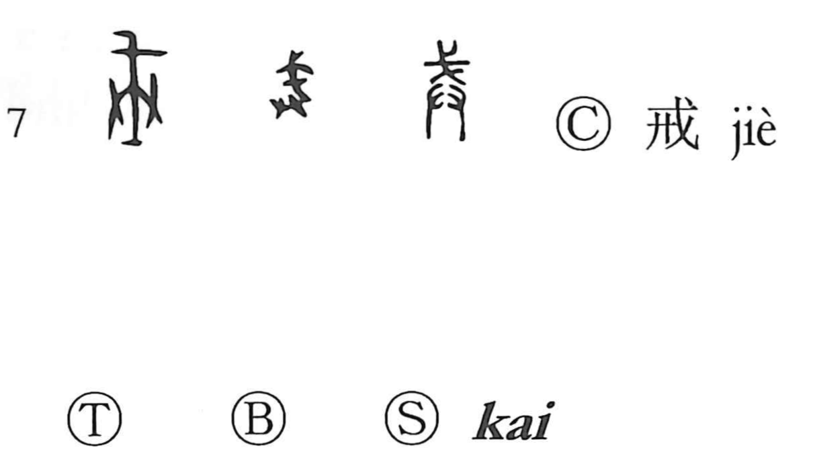

戒

Kun: imashimeru, imashime, imashimu | On: kai
to admonish ・ to warn ・ caution
Explanation
Formed from 戈, a pike or halberd, and 廾, two hands placed side by side, this character pictures a weapon lifted high in both hands—arming oneself and standing on alert. From that concrete image of preparation for battle, its sense broadened to the moral sphere: to admonish and warn, to brace the mind and take care so as not to err. Its structure parallels 兵, which similarly shows both hands wielding a tool of war (an ax).